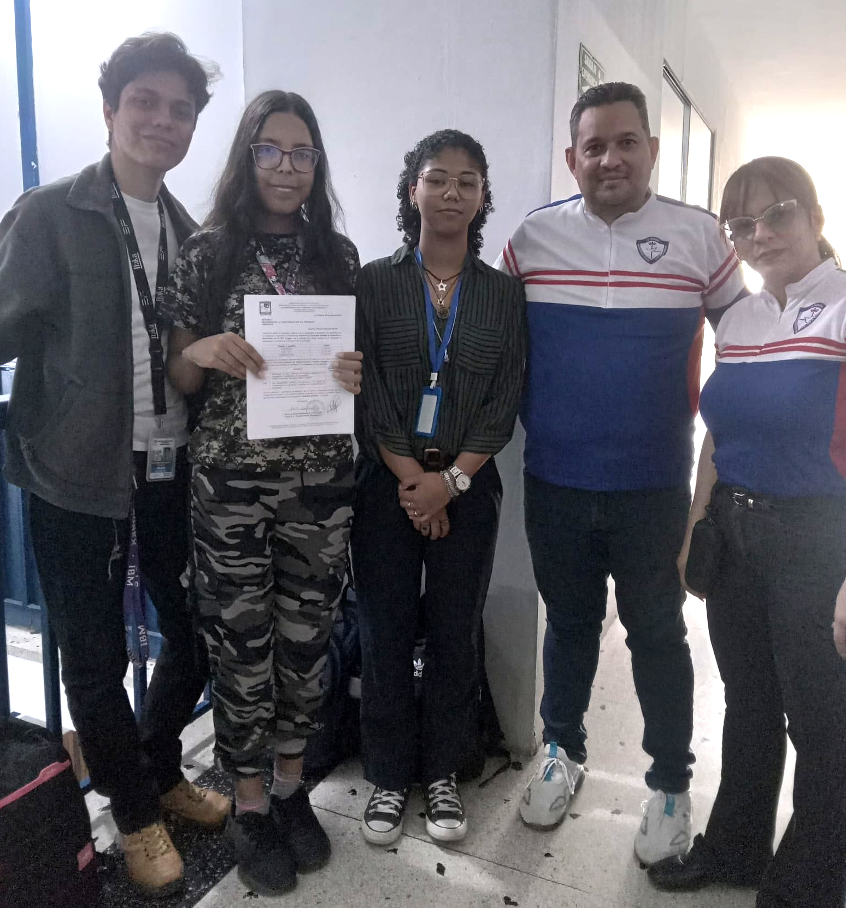
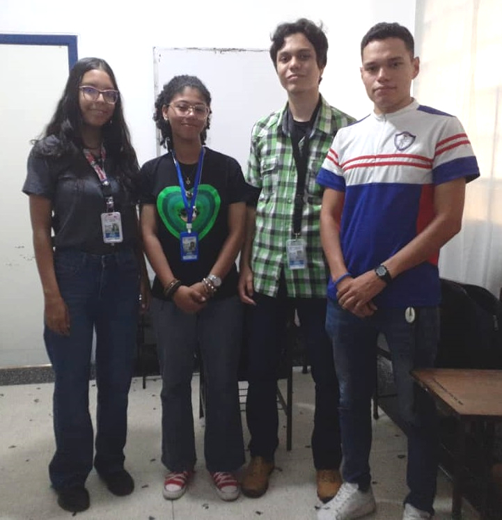

UPT Aragua
"Federico Brito Figueroa"
Manual Técnico Interactivo
Guía completa para el aprendizaje tecnológico
U.E.P. "La Trinidad"
Proyecto Educativo Institucional
"Federico Brito Figueroa"
Guía completa para el aprendizaje tecnológico
Proyecto Educativo Institucional
La U.E.P. "La Trinidad" es una institución educativa privada ubicada en La Victoria, Estado Aragua, Venezuela. Fundada en septiembre de 2018, la escuela se ha destacado por su compromiso con la excelencia académica y la formación integral de sus estudiantes, basándose en principios cristianos y valores fundamentales.
Sede principal de educación inicial y primaria

Sede secundaria de educación media

Equipo de desarrollo junto a la Profesora Magister Doriannys Fernandez
Equipo de desarrollo junto a el director, Profesor Christian Barrios y la subdirectora, la Profesora Meribert Díaz
Equipo de desarrollo junto al encargado del area informática, Ingeniero Luis Lira
En esta sección exploraremos algunos conceptos fundamentales relacionados con el mantenimiento de computadoras. Estos aspectos básicos permiten comprender la importancia de preservar el buen funcionamiento de los equipos informáticos, identificar sus componentes esenciales y conocer las prácticas iniciales que contribuyen a su cuidado y rendimiento. Esta base teórica es clave para avanzar hacia procedimientos más específicos y técnicos en el mantenimiento preventivo y correctivo.
El mantenimiento de computadoras consiste en acciones y procedimientos orientados a preservar y optimizar el funcionamiento de los sistemas informáticos.
El mantenimiento adecuado de las computadoras es crucial para garantizar su rendimiento óptimo, prolongar su vida útil y prevenir pérdidas de datos. Un buen mantenimiento ayuda a evitar interrupciones en el trabajo, reduce costos de reparación y mejora la seguridad del sistema.